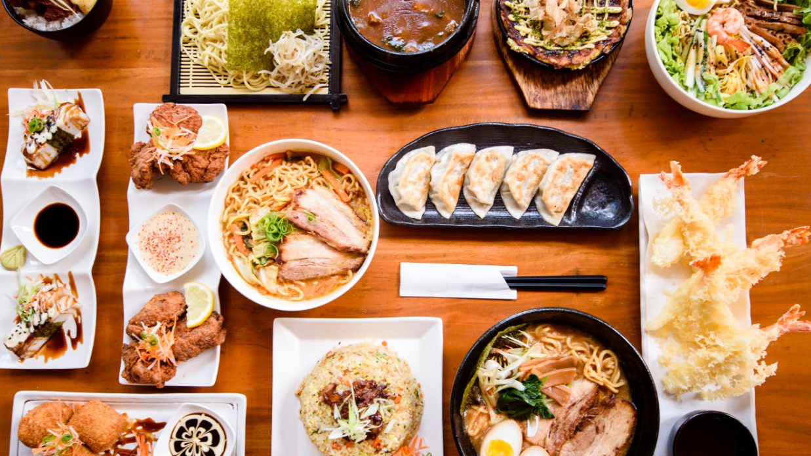

- Viajes Gastronomicos por el Mundo
Viajar es un verdadero festín para los sentidos. Cada aventura es una oportunidad única para descubrir la diversidad culinaria de nuestro planeta.
Desde saborear los exquisitos platos locales en puestos callejeros hasta deleitarse con las creaciones de chefs renombrados en restaurantes de renombre,
cada bocado nos transporta a una nueva cultura y nos conecta con las historias y tradiciones que dan forma a la comida del mundo.
¡Acompáñame en un viaje culinario que promete explorar el mundo a través del paladar!
Estadísticas |
||||
| Comida | Nombre del País | Restaurantes Recomendados del Destino en Costa Rica | Enlace con la Información | |
 |
Costa Rica | Resturantes | Link | |
|  | Japon | Resturantes | Link | |
 |
Alemania | Resturantes | Link | |
 |
Reino Unido | Resturantes | Link | |